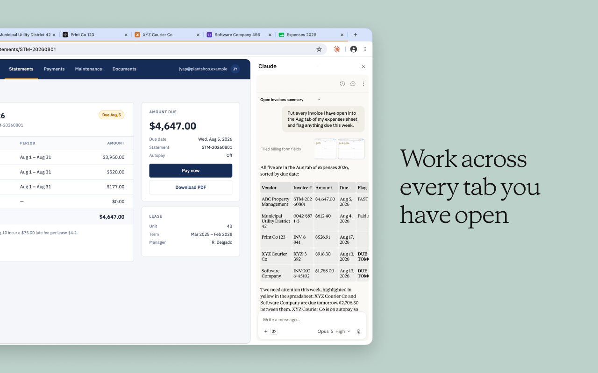

Olá 🖖
Co-Fundador e Goku da Métricas Boss
Programador desde que me entendo por gente.
Não sou palestrante. Não sou influenciador.
Não trouxe nenhuma fórmula mágica para o sucesso.
@lucianfialho
Nó 3
O que a gente tem que aprender antes de aprender.
shit in, shit out
Back to Basics · 1 de 3
Entre no site. Procure o produto. Coloque no carrinho. Vá até o fim.
Se você nunca fez, você não sabe onde dói.
Back to Basics · faça agora
Não é exercício. É pra você chegar no CRO.md daqui a pouco com a jornada já na mão.
Back to Basics · 2 de 3
É o que precisa estar pronto antes de pensar em teste A/B.
Plano de mensuração · a jornada que você acabou de fazer
KPI primário: conversão sessão → pedido. Guardrail: devolução. Os nomes são os eventos padrão de e-commerce do GA4; a Magalu é só o exemplo da jornada, não o plano dela.
Back to Basics · a checagem
O purchase do GA4 bate com os pedidos da plataforma?
E os outros eventos estão disparando corretamente, na etapa certa?
Se não bate, o teste nasce morto — e não existe ferramenta que conserte.
Back to Basics · 3 de 3
Onsite
Ferramentas de pesquisa no site
Interno — olhar pra dentro de casa
Objeções, com o time de vendas
Perfil demográfico de quem já comprou
Dados do SAC
É uma coisa que a gente fala muito e pouca gente faz.
Case · Hering
Qual é a principal dor do cliente com o site? A resposta já estava no SAC.
Ninguém tinha lido tudo de uma vez.
Nó 4
Não é "qual é melhor". É o que se perde em cada um.
O que se perde
Compor com outras ferramentas — pipe, scripts, gmp-cli
Rodar sem ninguém na frente — automação, agendamento
Rodar fora da sua máquina — servidor, SSH
É a versão confortável. O preço é o alcance.
O que se perde
Interface visual — ver o diff do que mudou, navegar os arquivos
Curva de entrada — quem nunca abriu terminal trava
Várias conversas abertas, lado a lado, e voltar nelas
Hoje: terminal. Mais acesso, conecta mais coisa, gerencia o Claude in Chrome.
Nó 5
Todo mundo junto. Quem travar, dupla.
Instalar · quem já fez de manhã, pula pro segundo comando
curl -fsSL https://claude.ai/install.sh | bash claude
irm https://claude.ai/install.ps1 | iex claude
A maioria já instalou de manhã: abre o terminal, digita claude, confere que loga. Quem não instalou, a primeira linha do seu sistema. Sem Node, sem npm.
/cro:hipotese-estruturadaCRO.md com "Plano de mensuração"/cro:srm-check 🟢 nesta sessão/cro:variante-builderDESIGN.md do projetoPreToolUse: rodam antes da ferramenta, saem com erro e uma mensagem dizendo o que falta. Lembra dos 8 itens do pre-flight da Tá? Não é prompt. É código. Não depende de o modelo "lembrar". Pasta hooks/ pra copiar.O Claude por dentro · MCP
Sem exportar planilha, sem copiar e colar. Os que valem pra CRO, com fonte oficial:
Instala com claude mcp add; o README de cada um tem a linha pronta. Hoje o GA4 vem pelo gmp-cli, que é CLI: mesma ideia, sem servidor.
O Claude por dentro · Claude in Chrome
Faz a jornada da loja, abre o carrinho, lê o checkout, e conta o que viu. É a extensão que o nó 11 usa pra rodar Morys em cima da página real.
chromewebstore.google.com/detail/claude/fcoeoabgfenejglbffodgkkbkcdhcgfn
Depois: claude --chrome no terminal e ele passa a enxergar as abas.

O Claude por dentro · Engenharia de contexto
O Claude só sabe o que você deu pra ele saber.
Contexto em arquivos separados, não num documento gigante.
CRO.md pra como a loja converte. DESIGN.md pra como ela parece.
Lembra do enriquecimento de contexto lá do Back to Basics? É o mesmo — agora pro Claude.
O Claude por dentro · Engenharia de contexto · a pasta e o kit
mkdir minha-loja cd minha-loja claude plugin marketplace add lucianfialho/cro-plugin claude plugin install cro@cro-plugin claude plugin marketplace add anthropics/claude-plugins-official claude plugin install skill-creator@claude-plugins-official
Seis linhas, uma vez na vida. Tudo que rodar com /cro: na frente hoje vem daqui. O que tem dentro a gente abre no nó 13.
O Claude por dentro · Engenharia de contexto · CRO.md
claude /cro:cro-md
Você explicou a mesma coisa duas vezes pro Claude sobre a sua loja? Era pra estar aqui.
O Claude por dentro · Engenharia de contexto · o arquivo
Primeiro serve pra você: se não consegue escrever a seção, é porque ainda não sabe.
Depois serve pro Claude: é o que ele lê antes de qualquer análise, hipótese ou variante.
Três seções a gente preenche hoje. As outras cinco vão no template.
Nó 6
claude --help
Dois parâmetros que você vai usar hoje
Slash commands · dentro do Claude
Nó 7 · Escolhendo o modelo
Nó 8
No nó 3, contexto pra pessoa decidir. Agora, contexto pro Claude.
Ele nunca viu a sua loja. Desenha a média da internet.
Aí você sobe a variante, ela perde, e você anota "a hipótese não funcionou".
Testou a hipótese e o visual ao mesmo tempo — e leu como se fosse só a hipótese.
O que resolve
A metade de cima — os valores
Cores em hex. Fontes com tamanho e peso.
Espaçamento. Arredondamento.
Botão, card, campo de formulário.
A metade de baixo — o porquê
"Esta é a única cor de ação do site. Gastar em dois botões na mesma tela mata a hierarquia."
Formato aberto, público, com validador. Texto puro — abre no bloco de notas. Este deck segue um. Creme, coral, serif em peso leve: está tudo num DESIGN.md.
Ao vivo · no site de alguém da sala
/cro:detecta-design-system https://www.suaLoja.com.br
Ela mede o que o site renderiza — não o que o CSS declara.
O que não achar, marca como não encontrado. Não inventa um vermelho plausível.
Como o Claude lê os dois
# Loja Hering (fictícia) Contexto de CRO: @CRO.md Design system: @DESIGN.md
CRO.md diz como a loja converte. Jornada, o que medir, quem compra, o que o SAC ouve.
DESIGN.md diz como a loja parece. Cores, fontes, botão, o porquê de cada escolha.
Abriu o terminal na pasta, rodou claude: ele já sabe os dois antes da primeira pergunta.
Lembra do enriquecimento de contexto do nó 3? É isso, em texto puro. O DESIGN.md é spec do Google. O CRO.md é convenção nossa — de hoje.
Nó 9
A receita, parte por parte.
As sete partes
As sete partes num arquivo real
02 --- name: heuristica-morys description: Varredura nas 7 dimensões de Morys. Use quando o usuário disser "analisar página", "diagnóstico de CRO", "onde estou perdendo conversão". --- 03 ## Input necessário 1. A URL da página 2. Um print, desktop e mobile 3. Qual é a conversão desejada 4. Quem chega nela 05 Se faltar o print, diga que a análise fica limitada e peça confirmação. Não invente o que está na página. 04 ## As 7 dimensões · avalie cada uma de 1 a 5 Relevância · Confiança · Orientação · Estímulo Segurança · Conveniência · Confirmação Cada nota cita o que você viu. Sem material: n/d. Não sugira solução ainda. Esta skill diagnostica. 06 ## Output | Dimensão | Nota | Achado | Evidência na página | Score total X/Y · as 2 dimensões mais fracas Termine com: "Rode hipotese-estruturada".
Markdown puro. Nada aqui é código. É uma receita escrita pra alguém que nunca viu a sua loja.
Formato de saída
Alucinação não se resolve pedindo "não invente". Se resolve não deixando espaço pra inventar.
Ao vivo
As 7 dimensões que a Taci acabou de apresentar — viradas em receita.
Apontar cada uma das sete partes no arquivo.
Nó 10 · callback na etapa 2 da Taci
Trazer os dados de comportamento pra dentro da conversa.
Ao vivo · gmp-cli
Lembra do "por que terminal"? É aqui. O Claude puxa o dado, olha o padrão, aponta o problema.
Sem exportar planilha, sem abrir dashboard.
O mesmo padrão pra qualquer ferramenta
Hoje, ao vivo
GA4 via gmp-cli
O site via Claude in Chrome
As que a Taci mostrou, mesmo caminho
Heatmap e gravação de sessão. Ferramenta de teste A/B. Pesquisa onsite. SAC.
MCP quando existe, CLI quando não, e o Claude escreve o conector se precisar.
A pergunta não é "tem integração com o Claude?". É "tem API?".
Nó 11 · callback na etapa 3 da Taci
Lembra do "faça a jornada do seu usuário"? Agora o Claude faz.
Ao vivo · Claude in Chrome
Home → produto → carrinho → checkout. As 7 dimensões de Morys em cada tela.
Sai: onde a página perde, com evidência — e a hipótese estruturada no template da Taci.
Nó 12
Lembra da receita do nó 9? Agora os ingredientes são o time da sua empresa.
Descreva o processo de CRO da sua empresa
/skill-creator:skill-creator Quero uma skill com o processo de CRO da minha empresa. Me pergunta o que precisar. Papéis: … Handoffs: …
Não descreva a ferramenta. Descreva quem faz o quê. Se você travar numa seção, é a mesma lição do CRO.md: ainda não sabe.
Você sai sabendo a nota
/cro:valida-skill-cro ~/.claude/skills/meu-processo-cro/SKILL.md
0, 1 ou 2 por critério. Nota de 0 a 10. E a pergunta exata que a sua skill não responde.
Sinal de alerta que ela detecta: passos claríssimos e zero em papéis. Você descreveu uma ferramenta, não o processo.
Nó 13
Skills por papel. E a sua skill de metodologia plugada nele.
claude plugin marketplace add lucianfialho/cro-plugin claude plugin install cro@cro-plugin
Tudo que rodou hoje com /cro: na frente veio daqui. Grátis, aberto. A pasta metodologia-exemplo é o encaixe da sua skill.
Mais os três hooks e o template de CRO.md. Tudo na mesma URL.
Se sobrou tempo
Cinco blocos independentes. Vocês escolhem. O que não couber está no PDF.
O mesmo Claude, sem terminal
Lembra do nó 4? É a outra ponta da escolha. O que você aprendeu hoje vale nas duas.
Sem você lembrar
/loop --cron "0 8 * * MON" "Puxa o GA4 da semana com o gmp-cli, compara com a anterior, escreve o resumo em relatorios/semana.md"
Cinco comandos
No plano Pro/Max você não paga por token, você gasta janela de uso. Sessão longa com Opus esgota a janela mais rápido.
O que persiste entre sessões
Regra prática: se você explicou a mesma coisa duas vezes, isso era pra estar num arquivo.
Ingestão de referências
Você constrói essa skill com o skill-creator em 10 minutos. É a mesma receita do nó 9: ingredientes e modo de preparo.